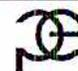
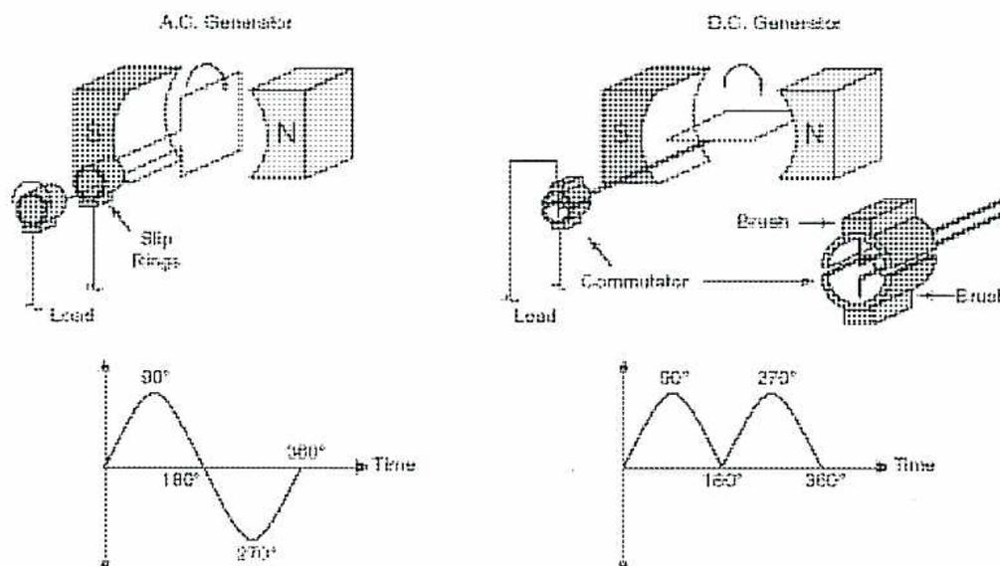
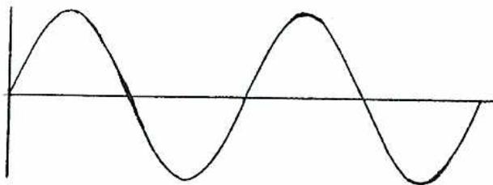
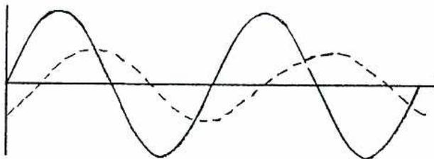
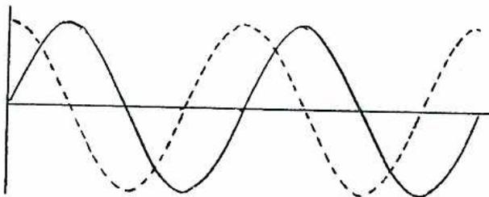
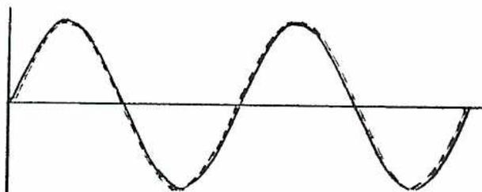
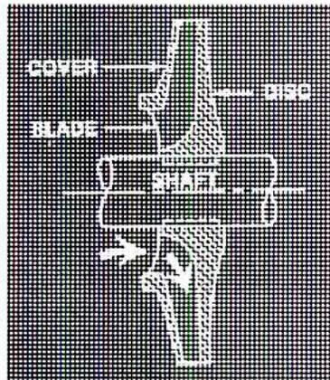
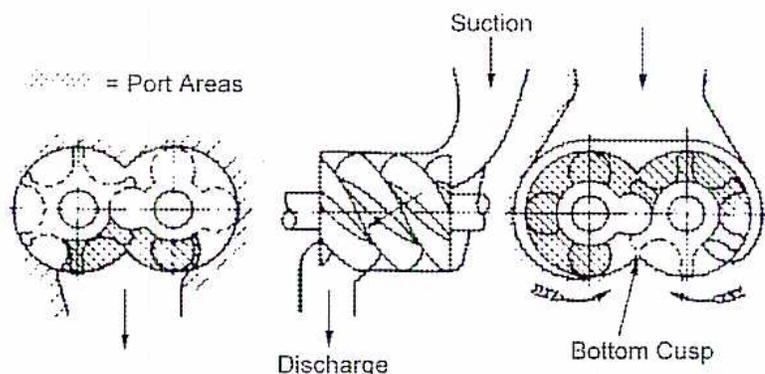
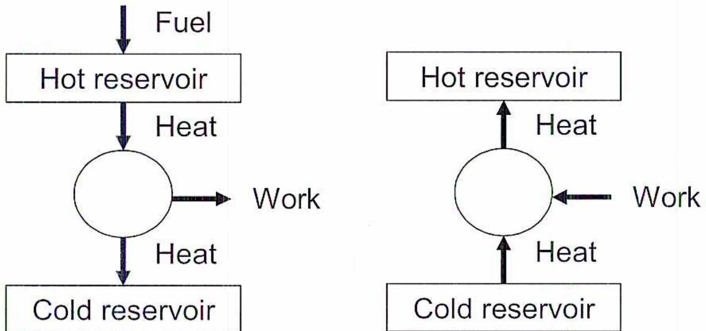

$$ \sin \phi = \frac{\text{perpendicular}}{\text{hypotenuse}} = \frac{\text{vertical component}}{\text{Vector}} $$
$$ \begin{aligned}\text{vertical component} &= \sin 45^\circ \times \text{Vector} \\ &= 0.707 \times 1.0 = 0.707\end{aligned} $$
The third finger of the right hand rule for generators points in the direction of the induced current.
The transition from zero volts to a positive maximum, to zero, to a negative maximum and back to zero is called one cycle.
The RMS value of 170 volts is: \( 170 \times 0.707 = 120.19 \text{ V} \) .
Capacitors are generally used to correct power factor in the industrial workplace.
In a circuit containing only resistance and inductance, current will lag voltage.
$$ \begin{aligned}\text{Inductive reactance: } X_L(\text{ohms}) &= 2\pi fL \\ &= 2 \times 3.1416 \times 50 \times 0.05 \\ &= 15.71 \text{ ohms}\end{aligned} $$
$$ \begin{aligned}\text{Power factor} = \cosine \phi &= \frac{\text{Watts}}{VA} = \frac{\text{TruePower}}{\text{Apparent}} \\ &= \frac{21600}{240} \times 100 \\ &= 0.9\end{aligned} $$
The two most common types of 3-phase connections are delta and star.
$$ \begin{aligned}V_L &= V_p \\ &= 220 \text{ V} \\ I_L &= \sqrt{3} I_p\end{aligned} $$
$$ \begin{aligned}\text{b)} \quad &= 1.73 \times 80 \\ &= 138.40 \text{ A}\end{aligned} $$
$$ \begin{aligned}kVA &= \frac{\sqrt{3} V_L I_L}{1000} \\ \text{c)} \quad &= \frac{1.73 \times 220 \times 138.40}{1000} \\ &= 52.68 \text{ kVA}\end{aligned} $$
$$ \begin{aligned} P &= kVA \times \text{Power factor} \\ \text{d)} \quad &= 52.68 \times 0.75 \\ &= 39.51 \text{ kW} \end{aligned} $$
1. Explain the operation of a commutator.
The commutator is a mechanical rectifier. It converts AC power into DC power.
2. How is ripple reduced in a DC generator?
The ripple in the DC waveform can be improved further by adding more armature coils and commutator segments. It can also be improved by adding more poles.
3. What is the term for the action of the armature currents that establish a field that distorts and weakens the stator field?
The action of the armature currents in establishing a field that distorts and weakens the stator field is called armature reaction.
4. What is one method of reducing armature reaction in a DC generator?
Compensating windings or interpoles can be used to reduce armature reaction.
5. What is the most common application in industry for a DC generator with lap windings? Wave windings?
DC generators with lap windings are used high current applications and wave windings are used in high voltage applications.
6. Explain the difference between series wound DC generators and shunt wound generators.
In series generators, the field winding is in series with the armature winding. In shunt generators, the field winding is in parallel with the armature winding.
7. The voltage of a generator changes from 130 volts at a no-load condition to 120 volts at a full-load condition. What is the voltage regulation of this machine.
$$ \begin{aligned}\text{Voltage Regulation} &= \frac{(\text{No-load volts}) - (\text{Full-load volts})}{\text{Full-load volts}} \times 100 \\ &= (130-120)/120 \\ &= 8.3\%\end{aligned} $$
8. Describe back emf for a motor.
An emf is induced in the armature winding of a DC motor as it moves through the magnetic field. This voltage is called back emf or counter emf (cemf). Back emf is counter to, or opposes the applied voltage at the armature brushes. In other words, the back emf tends to restrict current flow in the armature.

A motor draws approximately 12 times more much more current during the first few seconds while it is started than it draws during normal full load operation.
Another method is the cemf starter. Cemf starters monitor back emf and adjust the amount of armature resistance as the motor speeds up. Resistance is added to the circuit through the voltage sensitive relays.
The technique of dynamic braking involves using the motor as a generator. To do this, the armature is disconnected from the supply lines and connected across heavy duty resistors. The shunt field of the motor remains connected to the power source for the motor. The motor now behaves like a generator and feeds armature current to the resistors. The motor will rapidly slow down since the armature current will be in a direction to opposed the motion of the armature (Lenz's Law).
Regenerative braking also used the motor as a generator. Take for example a crane when a heavy load is lowered. When the container is lowered, the DC motor will be driven faster than its rated speed. This will causes its back emf to be greater than the applied voltage and result in generator action. This energy is put back into the electrical system. The voltage produced while the load is being lowered is of the opposite polarity to the applied voltage. This acts like an electrical brake.
Friction losses, iron losses and copper losses.
$$ \begin{aligned}\text{Generator Efficiency} &= \frac{\text{Output}}{\text{Input}} \\ \text{Output} &= \text{Input} - \text{Losses}\end{aligned} $$
The losses will consist of Copper loss + Iron loss + Friction loss
and the Copper loss = Armature
\(
I^2R
\)
+ Field Circuit
\(
I^2R
\)
$$ \begin{aligned}\text{Generator Output Current} &= \frac{15\,000 \text{ watts}}{240 \text{ volts}} \\ &= 62.5 \text{ amps}\end{aligned} $$
$$ \begin{aligned}\text{Field Circuit Current} &= \frac{240 \text{ volts}}{180 \text{ ohms}} \\ &= 1.24 \text{ amps}\end{aligned} $$
$$ \begin{aligned}\text{Armature Current} &= 62.50 + 1.33 \\ &= 63.83 \text{ amps}\end{aligned} $$
$$ \begin{aligned}\text{Armature } I^2R &= 63.83^2 \times 0.5 \\ &= 4074.27 \times 0.5 \\ &= 2037.13 \text{ Watts}\end{aligned} $$
$$ \begin{aligned}\text{Field Circuit } I^2R &= 1.33^2 \times 180 \\ &= 1.77 \times 180 \\ &= 318.60 \text{ Watts}\end{aligned} $$
$$ \begin{aligned}\text{Total Copper loss} &= 2037.13 + 318.60 \\ &= 2355.73 \text{ Watts}\end{aligned} $$
$$ \begin{aligned}\text{Total losses at full load} &= 2355.73 + 700 \\ &= 3055.73 \text{ Watts}\end{aligned} $$
$$ \begin{aligned}\text{Generator Efficiency} &= \frac{15 \, 000}{15 \, 000 + 3055.73} \\ &= 0.8308\end{aligned} $$
$$ \text{Generator Efficiency} = \mathbf{83.08\% \text{ (Ans.)}} $$
AC generators are often called alternators. It has been discussed in previous modules that both DC and AC generators produce alternating current.

The figure illustrates the internal mechanisms and output waveforms of AC and DC generators. On the left, the AC generator is shown with a rotor connected to three slip rings. Brushes make contact with these rings, allowing the alternating current generated in the rotor to be transferred to an external load. Below this, a graph shows a standard sinusoidal AC waveform over one cycle (0° to 360°), with peaks at 90° and 270°. On the right, the DC generator is shown with a rotor connected to a commutator, which is divided into segments. Brushes contact the commutator segments, effectively rectifying the alternating current generated in the rotor into a pulsating direct current for the external load. Below this, a graph shows the resulting DC output waveform, which consists of two consecutive positive half-sine waves, with peaks at 90° and 270°.
Figure 1
Types of Generators
The main difference between the two types of generators is that the A.C. generator uses slip rings while the DC generator uses a commutator.
Fig. 1 shows the magnetic field to be stationary (stator) while the supply conductors rotate (rotor). This is not a practical design because it is difficult to deliver large amounts of power through slip rings or commutators.
2. Explain the relationship between alternator speed, frequency, and number of pole pairs
The formula that relates number of poles, speed and frequency is:
$$ f = \frac{pN}{60} $$
where \( f \) = frequency
\( p \) = number of pairs of poles
\( n \) = rotor speed in r/min
For example, a generator connected to a hydraulic turbine turns at a speed of 300 RPM and generates 60 Hz power. The frequency formula for generators is:
$$ \begin{aligned} P &= \frac{f \times 60}{N} \\ &= \frac{60 \times 60}{300} \\ &= 12 \text{ pairs of poles} \end{aligned} $$
This would be an application for a salient pole machine.
It is not possible to construct a generator with less than 1 pole-pair ( i.e. 2 poles). If the above formula is considered, this fixes the maximum speed of rotor of a 60 Hz AC generator at 3600 r/min. The speed of a 4-pole machine would be fixed at 1800 r/min. 1800r/min and 3600 r/min are typical speeds for cylindrical rotor machines. Using the above formula, find the speed necessary for a 12 pole machine.
60 Hz systems dictate the constant speed necessary for any given generator. This speed is known as synchronous speed. AC generators are often called synchronous generators. For example, the synchronous speed of a 2- pole generator is 3600 r/min and for a 4-pole generator is 1800r/min.
3. With the aid of a simple sketch, explain the sequence of operation for a brushless excitation system for a modern alternator.
The following is a sequence of operation for a brushless excitation system for a modern alternator. A simple schematic is shown in Fig. 11.
![Diagram of a Brushless Excitation System. It shows an alternator shaft connected to a stationary main stator field and a rotating main field. The rotating main field is connected to a rotating exciter winding, which is connected to a stationary exciter stator field. The stationary exciter stator field is connected to an automatic voltage regulator (AVR). The AVR is connected to the alternator output terminals (3-phase supply conductors). The AVR is also connected to a rotating rectifier bridge, which is connected to the rotating exciter winding.](acfc53eca625d62b38aa2563efa95c3e_img.jpg)
The diagram illustrates a brushless excitation system. On the left, the 'Stationary Main Stator Field' and 'Rotating Main Field' are shown. A central 'Alternator Shaft' connects these to the right side of the diagram. On the right, the 'Rotating Main Field' is connected to the 'Rotating Exciter Winding'. This winding is connected to the 'Stationary Exciter Stator Field'. The 'Stationary Exciter Stator Field' is connected to an 'Automatic Voltage Regulator (AVR)'. The AVR is connected to the 'Alternator Output Terminals (3-phase Supply Conductors)'. The AVR is also connected to a 'Rotating Rectifier Bridge', which is connected to the 'Rotating Exciter Winding'.
Figure 11
Brushless Excitation System
4. With the aid of a simple sketch, explain the operating principle of a direct-acting type of regulator with rolling contacts.
Fig. 16 illustrates the operating principle of a direct-acting type of regulator with rolling contacts. The two sectors, S1 and S2, are arranged so that clockwise movement of their pivots P1 and P2 cause each of them to roll over a bank of contacts to increase the resistance in the exciter field circuit; anticlockwise movement results in a decrease of resistance. The movement of the pivots is controlled by the drum D which has a restraining torque exerted by springs and an operating torque derived from the machine terminal voltage.
![Diagram illustrating the principle of a Direct-acting Rheostatic Regulator for a generator. The diagram shows a generator connected to a voltage transformer. The generator's field winding is connected to an exciter field winding. The exciter field winding is connected to a rheostat (labeled D) which is part of a circuit including a generator field winding. The rheostat is connected to a generator field winding (labeled S1) and a generator field winding (labeled S2). The generator field winding (S1) is connected to the generator field winding (S2) via a generator field winding (labeled P1) and a generator field winding (labeled P2).](a5ee5c23b6dc52ec1d724b76d5a5f58f_img.jpg)
Figure 16
Principle of Direct-acting Rheostatic Regulator
5. Explain the advantages hydrogen cooling has over air cooling for alternators.
Hydrogen gas has several advantages over air:
6. With the aid of a simple sketch, describe the seal oil system that is used for a hydrogen cooled alternator.
The seals prevent hydrogen from escaping outwards by forcing oil inwards against the seal. Seal oil is circulated from the main machine lubricating oil system, through the seals, to the hydrogen detraining tanks and then back to the main oil tank. The hydrogen detraining tanks allows any gas that may become entrained with the circulated oil to be removed before it is returned to the main storage tank. Fig. 40 shows the equipment and piping layout for a typical seal-oil system for a hydrogen cooled alternator.
![Schematic diagram of a Seal Oil System for H2 Cooled Alternator. The diagram shows a generator at the top connected to a complex piping system. Oil flows from a 'FROM VALVE' source, through a 'SEAL OIL COOLER' and 'SEAL OIL FILTER' (both with NC valves), into a 'TURBINE OIL TANK'. From the tank, oil is pumped by a 'D.C. SEAL OIL PUMP' (with a 'STARTER') and an 'A.C. SEAL OIL PUMP' (with a 'STARTER'). The oil is then forced into the generator. A 'MAIN POWER OIL' line is also shown. On the right, 'HYDROGEN DETRAINING TANKS' are connected to the system via pipes with NC valves. A legend at the bottom right defines the symbols: NC (Normally Closed), a valve symbol with an arrow (Shut Off Valve), a valve symbol with a checkmark (Non Return Valve), a valve symbol with a diagonal line (Adjustable Orifice), and a dashed line (Electrical Connection).](cfef993dcc8fb513de79eb1f93cf26ae_img.jpg)
Figure 40
Seal Oil System for H
2
Cooled Alternator
The series of operations required to bring about the above conditions and to close the switch are known as Synchronizing . The process of synchronizing may be illustrated by the following diagrams of the incoming machine and the system voltage waves, as shown on Fig. 41.
Fig. 41(a) shows the existing system voltage wave (one phase only shown).
Referring to Fig. 41(b), the machine voltage wave is shown dotted and is out of phase and frequency.
The generators output voltage is slowly increased to equal the systems maximum voltage. This is accomplished by adjusting the field rheostat.
Fig. 41(c) shows that the machine and system voltages are now equal. The voltages are out of phase but the frequency is being increased by increasing the speed of the prime mover.
In Fig. 41(d), the machine and systems:
The synchroscope shows 12 o'clock and the switch can now be closed.




Figure 41
Steps Taken to Synchronize an Incoming A-C Generator to the Supply System
A coil of wire is used as a rotor. As the applied single-phase AC voltage builds up, so does the strength of the stator field. The magnetic field cuts through the conductor. This action induces an emf in the rotor coil, which causes a current to flow in the closed loop. The amount of current depends on the resistance of the coil of wire. The current flowing in the rotor sets up a magnetic field that opposes the stator field. This principle of induction produces the torque that causes the rotor to turn.
Shorting rings.
The rotor core is laminated to reduce eddy currents.
$$ \text{Speed} = \frac{\text{frequency} \times 60}{\text{number of pole pairs}} $$
$$ \text{Speed} = \frac{60 \times 60}{2} $$
$$ \text{Speed} = \frac{3600}{2} $$
$$ \text{Speed} = 1800 \text{ rpm (Ans.)} $$
The amount of current the motor will draw under full load (torque) conditions is called full-load amps (FLA). It is also known as nameplate amps since this is the figure that appears on the nameplate of the motor.
Torque is increased as resistance is increased in a wound rotor motor.
| Motor: | |
| Universal | ( e ) |
| Single-phase | ( f ) |
| Shaded-pole | ( a ) |
| Three-phase | ( d ) |
| Capacitor-start | ( b ) |
| Split-phase | ( c ) |
The laminations are coated with varnish that electrically isolates it from the adjacent winding.
Transformer construction falls into two general classifications: core-type and shell-type. In the core type the windings surround the core and in the shell-type, the core surrounds the windings.
$$ \frac{10 \text{ kVA}}{130 \text{ V}} = \frac{10 \, 000 \text{ VA}}{130} = 76.92 \text{ A} $$
$$ 3 \times 37.5 \text{ kVA} = 112.5 \text{ kVA}. $$
$$ \frac{10 \text{ MVA}}{\sqrt{3} \times 418.38 \text{ A}} = \frac{10 \, 000 \, 000 \text{ VA}}{1.732 \times 418.38} = 13 \, 800 \text{ V} $$
Temperature rise indicates the maximum temperature rise (in degrees Celsius) the transformer will exhibit at full load conditions.
K-factor is an indicator of how well a transformer will tolerate harmonics.
Copper loss results from the resistance of the primary winding and secondary winding. Core loss is the energy required to sustain the magnetic field in the steel core.
9. What are the two most widely used cooling mediums for power and distribution transformers?
Air and oil.
10. Describe how most dry-type transformers are cooled.
There are no fans to force air into and out of the enclosure with typically no external fins or radiators. Cooler air enters the lower ports, is heated as it rises past windings, and exits the upper ventilation ports.
11. What other purposes than cooling does transformer oil serve?
Cooling oil also provides insulation and helps extinguish arcs.
12. Why is oil better than air for transformer cooling?
Oil has a greater ability to dissipate heat than air.
13. Describe the difference between a liquid-immersed, forced liquid-cooled transformer and a liquid-immersed, forced liquid-cooled, water cooled transformer.
Liquid-immersed, forced liquid-cooled. This transformer normally has only one rating. The transformer is cooled by pumping oil (forced oil) through a radiator normally attached to the outside of the tank. Also, air is forced by fans over the cooling surface.
Liquid-immersed, forced liquid-cooled, water cooled. This transformer is cooled by an oil/water heat exchanger normally mounted separately from the tank. Both the transformer oil and the cooling water are pumped (forced) through the heat exchanger to accomplish cooling.
14. A current transformer is labelled with a ratio 200:5. What current will flow in the secondary if 150 amps flows in the primary?
$$ \frac{200}{5} = \frac{150}{\text{secondary current}} \rightarrow \text{secondary current} = \frac{150}{40} = 3.75 \text{ amps} $$
15. What is the most common three-phase transformer winding arrangement to supply a 208/120 volt unbalance load?
three-phase four-wire star connected grounded neutral system.
16. What letters are used to designate the high voltage side and low voltage side of a transformer?
H is used to designate the high voltage side and X is used to designate the low voltage side.
17. What does the presence of carbon monoxide in transformer oil indicate?
The presence of carbon dioxide would indicate the degradation of winding insulation.
18. Name two types of overcurrent devices.
Breakers and fuses.
The main difference between breakers and fuses is that breakers are designed to be reused if a fault occurs.
The larger the current, the faster the protective device will operate to clear the overcurrent fault or short circuit current.
False.
Expulsion fuses are not current limiting and as a result limit the duration of a fault on the electrical system, not the magnitude.
Current limiting fuses are fuses that, when their current responsive elements are melted by a current within the fuse's specified current limiting range, abruptly introduces a high resistance to reduce current magnitude and duration, resulting in subsequent current interruption.
200,000 A.
Thermal mechanism is a bimetal strip that heats during an overload condition.
Magnetic mechanism is a solenoid or electromagnet.
18. A motor has a service factor of 1.10. What does this mean?
This is a rating above the full load A that the motor can safely operate. For example, many motors have a service fact of 1.10, which means the motor can handle 110% of its full load current.
19. What is meant be the term “selectivity” as it pertains to protective relaying?
The relay must be able to differentiate between a condition that requires immediate attention and a condition that requires a time delay. The relay must also be selective only in the zone it is protecting. In other words, a relay must not take action if a fault occurs in another protected zone.
20. A current transformer has a ratio of 100:5. If 80 A are flowing in the primary of the transformer, what amount of current is flowing in the secondary?
4 A.
Compressors can be broken down into two types:
Positive displacement compressors function by drawing the fluid into an enclosed space whose volume is then physically decreased. The best known type is the reciprocating compressor. Other types are known as rotary compressors which include screw, sliding vane, lobe and liquid sealed compressors.
Dynamic compressors make use of blading to increase fluid velocity which is converted into pressure by diffusion (that is, a reduction in area). This type of compressor breaks down into two major types: centrifugal and axial.
Multi-stage compressor cylinders may be arranged in a number of different ways. They may be:
From the point of view of classification, rotary air compressors can be conveniently divided into four types, namely:
The disc is connected to the shaft, as shown in the sketch below. Air enters at the center or eye of the impeller and is forced out at high speed and increased pressure at the impeller rim because of centrifugal force. After leaving the impeller, the air passes through the casing where further conversion of speed to pressure occurs.

Centrifugal Compressor Wheel
The desiccant dryer works on the principle that certain materials, called desiccants, can absorb large amounts of moisture in the air. The moisture is then removed by a heatless or heat-activated process.
Reactivation of the desiccant or removal of the moisture is done by a heatless process or by the application of heat. Normally two towers are used with one tower used to dry the compressed air. When it becomes saturated, the compressed air is switched to the second tower while the first one is dried out.
A heatless dryer uses some of the compressed air, known as purge air, to dry out the saturated dryer. As the compressed air expands, its relative humidity is drastically lowered and it is able to reabsorb the moisture from the desiccant. The disadvantage of this method is that usually about 15-18% of the compressed air is required which reduces the capacity by that amount, increasing the cost. One advantage is that they can be pneumatically controlled which makes them suitable for hazardous areas.
Heat reactivated dryers operate by heating the saturated desiccant and then passing a small amount of compressed or purge air over the desiccant bed to carry the moisture away.
A receiver provides a reserve capacity for the compressed air and also serves to dampen out any pressure pulsations, two features which together will result in a steady air flow, gradual pressure changes and a smooth regulation of compressor output.
Air filters ensure that clean air is provided to the compressor. Atmospheric air is never clean, although to the naked eye it might appear to be so. Suspended foreign matter is always present. Very fine particles of dust, sand and grit are always entrained in the atmosphere.
For lubricated compressors, an air-oil separator is installed after the compressor to remove the lubricant injected into the compressor.
Regulation systems fall conveniently into four basic types:
Control systems have three basic functions:
The density of air decreases with altitude. Consequently the mass of air handled by a compressor will be reduced with altitude and, in addition the air will need to be compressed through an increased pressure range to maintain the same discharge pressure.
These effects of altitude result in an increased power input to a particular compressor per unit mass of air delivered. Moreover, the increased ratio of compression is accompanied by an increase in air temperature and this may result in excessively high discharge temperatures, an operating factor which is extremely deleterious both to maintenance and lubrication.
10. Describe three possible causes for high discharge temperature on a reciprocating compressor.
High discharge temperature can be caused by (choose any three):
1. State six properties of an ideal refrigerant.
The ideal refrigerant should possess the following properties:
2. a) List the four basic components of a closed vapour compression refrigeration system.
b) Use a simple diagram to show the relative pressures and temperatures between each component.
a) A closed-compression system consists of four essential parts:
b) The following figure shows an actual example using the refrigerant (Freon 12) with the relative pressures and temperatures at various points in the system.
![A schematic diagram of a vapor-compression refrigeration cycle. The cycle consists of four main components: a compressor, a condenser, an expansion valve, and an evaporator. The refrigerant (ammonia) is shown in various states: 1. At the compressor inlet (bottom left), it is Superheated Vapour at 21°C and 196 kPa. 2. After compression (top left), it is Superheated Vapour at 55.5°C and 831.5 kPa. 3. In the condenser (top), it becomes Saturated Vapour at 38.8°C and 831.5 kPa, then Subcooled Liquid at 30°C and 831.5 kPa. 4. After the expansion valve (right), it becomes a Liquid-Vapour Mixture at 38.8°C and 831.5 kPa. 5. In the evaporator (right and bottom), it becomes Saturated Vapour at -1°C and 196 kPa, and finally a Liquid-Vapour Mixture at -1°C and 196 kPa before returning to the compressor.](cbdfdade780e677eb1c1aef3081ce9ef_img.jpg)
3. Explain the difference between direct and indirect cooling.
With an indirect system of cooling, the evaporating coils are led through a tank containing a liquid such as brine (a strong solution of a salt in water with a low freezing point). The ammonia, in evaporating, extracts heat from and cools the brine. The brine is then pumped through the cold rooms and carries heat from these rooms back to the evaporator.
With direct cooling, the evaporating coils are placed directly in the rooms to be cooled. Liquid refrigerant is evaporated in them without the intervention of brine or any other carrying medium.
4. What two factors does the ammonia absorption system depend on?
Operation of the ammonia absorption system of refrigeration depends upon:
5. With the aid of a simple sketch, describe a cascade system.
Cascade Refrigeration Systems
Another means of producing very low temperatures is the cascade system where two refrigerants are used with two separate cooling loops. As shown in Fig. 8, the low-temperature stage is the one that provides the intended cooling. The condenser of the low-temperature stage is connected to the evaporator of the high-temperature stage.
The refrigerant used for the low-temperature stage can be chosen to operate at high pressure and low temperature, while the refrigerant for the high temperature stage can be a normal refrigerant.
For the cascade system to operate properly there must be an overlap between the condenser temperature of the low stage and the evaporator temperature of the high stage. This needs to be somewhat lower, around 5-10°C, to permit adequate heat transfer.
![Schematic diagram of a Cascade Refrigeration System. The system consists of two stages: a Low Stage and a High Stage. The Low Stage includes an Evaporator, an Expansion Valve, a Heat Exchanger, and a Compressor. The High Stage includes a Condenser, a Receiver, a Heat Exchanger, and a Compressor. A central 'Combination Low-Stage Condenser-Receiver and High-Stage Evaporator' connects the two stages. The Low Stage Compressor discharges into the central unit, and the High Stage Evaporator draws refrigerant from it. The High Stage Condenser rejects heat to the surroundings.](043e64d41a3368d138ace3816fd26469_img.jpg)
The diagram illustrates a cascade refrigeration system. On the left, the 'Low Stage' cycle includes an 'Evaporator', an 'Expansion Valve', a 'Heat Exchanger', and a 'Compressor'. On the right, the 'High Stage' cycle includes a 'Condenser', a 'Receiver', a 'Heat Exchanger', and a 'Compressor'. In the center, a 'Combination Low-Stage Condenser-Receiver and High-Stage Evaporator' serves as the interface. The Low Stage Compressor discharges into the central unit, and the High Stage Evaporator draws refrigerant from it. The High Stage Condenser rejects heat to the surroundings.
Cascade Refrigeration System
6. Explain what a hermetic system is and why it is used.
Hermetic Systems
Since refrigerant leakage is an undesirable consequence of refrigeration systems, efforts have been made to encapsulate components into sealed containers, and thus produce what are referred to as hermetic systems.
Hermetic design is most often applied to small compressors used for domestic refrigerators, small air conditioners, and other small to medium size refrigeration units. The motor and compressor are contained in a sealed unit that can be welded to other components and piping. Both the compressor and motor are in contact with the refrigerant, but no shaft seals are required. Since ammonia attacks the copper windings of the motor, refrigerants are generally limited to the halocarbon types.
Some compressors are semi-hermetic with covers that allow access to pistons and cylinders for servicing and maintenance. Large compressors are normally of the open type.
Screw compressors, also known as helical rotary compressors, have become more common in the past few decades and have at least partially replaced reciprocating compressors in many refrigeration applications. With improvements in their design, they are able to meet high compression requirements with flexible capacity control.
A twin-screw design is the most common arrangement. It consists of two rotational elements, or rotors, that mesh together and provide a decreasing area from one end of the rotor to the other. This action produces a corresponding pressure increase. One rotor has four convex lobes that mesh with six concave lobes on the other rotor. Other combinations, such as 3/5 and 5/7, are also sometimes used. The rotors are located in a pressurized housing.
The compression ratio is determined by the ratio of the volume of the cavity at the discharge end to the volume of the cavity at the suction end. Capacity can be controlled by a sliding valve mechanism that alters the volume of the suction port or by controlling the speed of the rotor using a variable speed drive.

The diagram illustrates the internal components of a rotary screw compressor. It features two intermeshing rotors: one with four convex lobes and the other with six concave lobes. The rotors are housed within a casing. Arrows indicate the flow of refrigerant: 'Suction' at the top right, 'Discharge' at the bottom center, and 'Port Areas' indicated by a legend on the left. The 'Bottom Cusp' is also labeled at the bottom right. The diagram shows the rotors in cross-section, highlighting the meshing lobes and the housing structure.
Rotary Screw Compressor
The evaporator is the heat exchanger where cooling occurs. The cooling may be direct in which the evaporator is placed inside the room or container that needs to be cooled. It may also be indirect, in which case it cools a fluid that is circulated to the location that needs to be cooled. There are two principal types of evaporators:
In this type, the ammonia is evaporated from a liquid into a gas in banks of pipe coils. The refrigerant is entirely evaporated at the exit of the coils.
The disadvantage of the dry evaporator is that its surfaces are not constantly wetted by the boiling refrigerant. This has led to the development of the flooded type evaporator in which some form of tank or header, called an accumulator, keeps the inside of the evaporator surface flooded with liquid. While this requires a greater initial charge of liquid refrigerant, the higher heat transfer rate per area of evaporator surface is a decided advantage.
Types of condensers in use include:
The double-pipe condenser consists of two pipes, one inside the other, placed in vertical rows. The cooling water circulates inside the smaller pipe, and the ammonia circulates in the annular space between the inner and outer pipes. The ammonia gas enters at the top, and the liquid is drawn off at the bottom. The gas and the cooling water travel in opposite directions so that the coldest water is in contact with the cool liquid ammonia, and the hottest water is in contact with the hot gas.
In the simplest evaporative condenser, water trickles over the coils and drains away to waste or to be cooled and used again where water is scarce. Since the counter-current principle cannot be used (the water must flow from top to bottom), the coils are rearranged so that the hot gas enters at the bottom.
The shell-and-tube condenser consists of an outer shell containing a number of tubes expanded into headers at each end. It uses a two-pass design; the water flows through the tubes, and the refrigerant condenses outside the tubes.
This is the most common type, being quite efficient and compact. It is made in a wide variety of sizes, and units may be stacked one above the other in multiples to increase capacity. Vertical units are also made, usually having gravity water-flow down the tubes.
The purpose of the thermostat is to start and stop the compressor or regulate its output when the temperature changes and approaches the upper or lower limit.
Thermostats may be operated by (choose any three):
The low pressure operated safety switch is used to protect the system against a lower than normal suction pressure. The low pressure limit is set according to operational requirements.
4. Describe the function and operation of a thermostatic expansion valve.
The thermostatic expansion valve is a liquid refrigerant control valve which maintains a constant pressure in the evaporator during the time the compressor is operating, regardless of load. In addition, the valve automatically shuts off the liquid flow when the compressor stops. A thermostatic element ensures that the vapor leaves at a slightly superheated state to prevent liquids leaving the evaporator.
The valve contains a valve stem attached to a bellows or diaphragm in the underpart of the valve housing. A spring exerting a downward force on the diaphragm tends to open the valve. This force is counteracted by the evaporator pressure acting upward against the diaphragm, which tends to close the valve. The spring tension is adjusted so that during operation the two forces balance each other and the valve is opened sufficiently to allow enough liquid to flow into the evaporator to maintain the desired pressure and, therefore, the desired temperature.
5. List and describe three methods for varying the capacity of compressors.
The following methods are used for varying the capacity of compressors (any three can be mentioned):
6. List four things that should be checked after a refrigeration system has been started.
The following items should be checked (any four can be chosen):
The electronic leak detector draws vapour through a tube fitted with a sniffer at the end. The sniffer is moved over any area where a leak may be suspected. It measures the electrical resistance of the vapour sample. As long as air is drawn into the detector, it does not react. But as soon as the sample contains refrigerant,
even a minute amount, the change in resistance of the sample and the resulting change in current flow causes the detector to react. It indicates the presence of the refrigerant either on a meter or by activating a light or a buzzer.
Two reasons for drying a refrigeration system are:
a) Insufficient refrigerant
b) Overcharging

The diagram consists of two separate schematic representations of thermodynamic cycles.
The left diagram represents a heat engine. At the top, an arrow labeled 'Fuel' points down into a rectangular box labeled 'Hot reservoir'. From this box, an arrow labeled 'Heat' points down to a central circle. From the right side of the circle, an arrow labeled 'Work' points to the right. From the bottom of the circle, an arrow labeled 'Heat' points down to a rectangular box labeled 'Cold reservoir'.
The right diagram represents a basic refrigeration machine. At the bottom, a rectangular box labeled 'Cold reservoir' has an arrow labeled 'Heat' pointing up to a central circle. From the right side of the circle, an arrow labeled 'Work' points to the left. From the top of the circle, an arrow labeled 'Heat' points up to a rectangular box labeled 'Hot reservoir'.
The heat engine takes heat from a hot reservoir (usually provided by combustion of a fuel) and extracts work after which the remaining heat is transferred to a cold reservoir. In a refrigeration and heat pump cycle, heat is removed from a reservoir (that is the substance to be cooled), work is done on the refrigerant and heat is expelled to a hot reservoir.
The four stages are:
Stage 1 - 2 Expansion through the expansion valve without change in heat content (kJ/kg of refrigerant).
Stage 2 - 3 Evaporation at constant pressure.
Stage 3 - 4 Adiabatic compression.
Stage 4 - 1 Condensing at constant pressure.
![A Pressure-Enthalpy (P-H) diagram for a refrigeration cycle. The vertical axis is Pressure (P) in kPa, and the horizontal axis is Enthalpy (H) in kJ/kg. The cycle is shown as a rectangle with vertices 1, 2, 3, and 4. State 1 is at the top left, state 2 is at the bottom left, state 3 is at the bottom right, and state 4 is at the top right. The process from 1 to 2 is labeled 'Expansion' and is a vertical dashed line. The process from 2 to 3 is labeled 'Evaporation' and is a horizontal dashed line. The process from 3 to 4 is labeled 'Compression' and is a solid curve. The process from 4 to 1 is labeled 'Condensation' and is a horizontal solid line. A saturation dome curve is shown above the cycle. Vertical dashed lines extend from states 2, 3, and 4 down to the horizontal axis, labeled H2, H3, and H4 respectively.](24b549c0c4b79c515b244625cf4f4978_img.jpg)
3. Using the diagram drawn for Question 2, construct a heat balance for the refrigeration cycle and from this define the following quantities for this cycle (use enthalpy units):
$$ \text{Coefficient of Performance} = \frac{\text{Heat absorbed in evaporator}}{\text{Heat equivalent of compression work}} $$
c)
$$ COP = \frac{(H_3 - H_2)}{(H_4 - H_3)} $$
4. The compressor of a refrigerating machine is driven by a motor of 7.5 kW output.
Take specific heats of water as 4.183 kJ/kg and ice as 2.135 kJ/kg and latent heat of fusion as 335 kJ/kg.
(a) Capacity of machine
The coefficient of performance is related to the refrigerating effect and the work done by the equation
$$ \begin{aligned}\text{COP} &= \frac{\text{Refrigerating effect/min}}{\text{Compressor work/min}} \\ &= \frac{(H_3 - H_2)}{(H_4 - H_3)}\end{aligned} $$
The motor output of 7.5 kW = \( 7.5 \times 60 \) kJ/min
and COP = 3.5 (given)
Refrigerating effect/min = \( \text{COP} \times \text{Motor output} \)
Refrigerating effect/min = \( 3.5 \times 7.5 \times 60 \)
Refrigerating effect/min = 1575 kJ/min
Machine capacity:
$$ \begin{aligned}\text{Capacity} &= \frac{\text{Refrigerating effect/min}}{\text{Heat absorption rate/tonne}} \\ \text{Capacity} &= \frac{1575 \text{ kJ/min}}{233 \text{ kg/min/t}} \\ \text{Capacity} &= 6.76 \text{ t of refrigeration (Ans.)}\end{aligned} $$
(b) Mass of ice
1 kg of ice at \( -10^{\circ}\text{C} \) from water at \( 20^{\circ}\text{C} \) requires the following heat removal:
$$ \text{Water at } 20^{\circ}\text{C to water at } 0^{\circ}\text{C} = 20^{\circ}\text{C} \times 4.183 \text{ kJ/kg} $$
$$ \text{Water at } 20^{\circ}\text{C to water at } 0^{\circ}\text{C} = 83.66 \text{ kJ/kg} $$
$$ 1 \text{ kg water at } 0^{\circ}\text{C to } 1 \text{ kg ice at } 0^{\circ}\text{C} = 335 \text{ kJ} $$
$$ 1 \text{ kg ice at } 0^{\circ}\text{C to } 1 \text{ kg ice at } -10^{\circ}\text{C} = [0^{\circ}\text{C} - (-10^{\circ}\text{C})] \times 2.135 \text{ kJ/kg} $$
$$ 1 \text{ kg ice at } 0^{\circ}\text{C to } 1 \text{ kg ice at } -10^{\circ}\text{C} = [0^{\circ}\text{C} + 10^{\circ}\text{C}] \times 2.135 \text{ kJ/kg} $$
$$ 1 \text{ kg ice at } 0^{\circ}\text{C to } 1 \text{ kg ice at } -10^{\circ}\text{C} = 10^{\circ}\text{C} \times 2.135 \text{ kJ/kg} $$
$$ 1 \text{ kg ice at } 0^{\circ}\text{C to } 1 \text{ kg ice at } -10^{\circ}\text{C} = 21.35 \text{ kJ/kg} $$
$$ \text{Total heat removed} = 83.66 \text{ kJ/kg} + 335 \text{ kJ/kg} + 21.35 \text{ kJ/kg} $$
$$ \text{Total heat removed} = 440.01 \text{ kJ/kg} $$
$$ \text{Refrigerating effect of this machine} = 1575 \text{ kJ/min} $$
$$ \text{kg ice made/min} = \frac{\text{Refrigerating effect of this machine}}{\text{Total heat removed}} $$
$$ \text{Ice made/min} = \frac{1575 \text{ kJ/min}}{440.01 \text{ kJ/kg}} $$
$$ \text{Ice made/min} = 3.58 \text{ kg} $$
$$ \text{Ice made in 24 h} = \frac{\text{Ice made/min} \times \text{min/hr} \times \text{hours}}{1000 \text{ kg/tonne}} $$
$$ \text{Ice made in 24 h} = \frac{3.58 \text{ kg/min} \times 60 \times 24}{1000 \text{ kg/tonne}} $$
$$ \text{Ice made in 24 h} = \frac{5155.2 \text{ kg}}{1000 \text{ kg/tonne}} $$
$$ \text{Ice made in 24 h} = \mathbf{5.16 \text{ t}} \text{ (Ans.)} $$
Find the following:
Note: Quantities (a), (b) and (c) should be stated in kJ/kg of refrigerant circulated. Atmospheric pressure can be taken as 101.3 kPa. Assume heat at end of compression as 1640.8 kJ/kg.
The enthalpy at the entry to the condenser is the same as the exit of the compressor which has been given as 1640.8 kJ/kg. At the exit of the condenser, the enthalpy is the same as that of saturated ammonia at a pressure of 864 kPa gauge or 965.3 kPa abs and is found by interpolating:
$$ \text{Enthalpy at 965.3 kPa} = \text{Enthalpy at 913.4} + \frac{51.9}{58.8} (\text{Enthalpy at 972.2} - \text{Enthalpy at 913.4}) $$
$$ \text{Enthalpy at 965.3 kPa} = 284.6 \text{ kJ/kg} + 0.8827 (294.1 \text{ kJ/kg} - 284.6 \text{ kJ/kg}) $$
$$ \text{Enthalpy at 965.3 kPa} = 284.6 \text{ kJ/kg} + 0.8827 (9.5 \text{ kJ/kg}) $$
$$ \text{Enthalpy at 965.3 kPa} = 284.6 \text{ kJ/kg} + 8.39 \text{ kJ/kg} $$
$$ \text{Enthalpy at 965.3 kPa} = 292.99 \text{ kJ/kg} $$
The temperature at this point is interpolated by the same amount to be 23.8°C. Since the water is sub-cooled to 20°C, the sensible heat to do this is:
$$ \text{Sensible heat required} = (23.8 - 20) \times 4.183 \text{ kJ/kg} $$
$$ \text{Sensible heat required} = 3.8 \times 4.183 \text{ kJ/kg} $$
$$ \text{Sensible heat required} = 15.9 \text{ kJ/kg} $$
The total amount of heat rejected in the condenser:
$$ \text{Heat rejected} = (1640.8 - 292.99) + 15.9 $$
$$ \text{Heat rejected} = 1347.81 + 15.9 $$
$$ \text{Heat rejected} = \mathbf{1363.71 \text{ kJ/kg}} \text{ (Ans.)} $$
(b) Work input of the compressor
The enthalpy at the entry to the compressor is equal to the exit of the evaporator where the refrigerant leaves at a pressure of 108 kPa gauge or 209.3 kPa abs and 100% quality. Again by interpolation, the enthalpy of vapor at this pressure is
$$ \text{Enthalpy at } 209.3 \text{ kPa} = \text{Enthalpy at } 207.7 + \frac{1.6}{18.8} (\text{Enthalpy at } 226.5 - \text{Enthalpy at } 207.7) $$
$$ \text{Enthalpy at } 209.3 \text{ kPa} = 1422.7 \text{ kJ/kg} + 0.0851 (1425.3 \text{ kJ/kg} - 1422.7 \text{ kJ/kg}) $$
$$ \text{Enthalpy at } 209.3 \text{ kPa} = 1422.7 \text{ kJ/kg} + 0.0851 (2.6 \text{ kJ/kg}) $$
$$ \text{Enthalpy at } 209.3 \text{ kPa} = 1422.7 \text{ kJ/kg} + 0.2213 \text{ kJ/kg} $$
$$ \text{Enthalpy at } 209.3 \text{ kPa} = 1422.92 \text{ kJ/kg} $$
Heat equivalent of compression:
$$ \text{Work input} = 1640.8 \text{ kJ/kg} - 1422.92 \text{ kJ/kg} $$
$$ \text{Work input} = \mathbf{217.88 \text{ kJ/kg}} \text{ (Ans.)} $$
(c) Heat absorbed in the evaporator
The enthalpy at the entry to the evaporator is the same as at the exit of the condenser.
The enthalpy of the sub-cooled water is:
$$ \text{Enthalpy} = \text{Enthalpy at exit of condenser} - \text{Sensible heat to subcool the water} $$
$$ \text{Enthalpy} = 293 \text{ kJ/kg} - 15.7 \text{ kJ/kg} $$
$$ \text{Enthalpy} = 277.3 \text{ kJ/kg} $$
This is also the enthalpy at the entry of the evaporator since expansion is at constant enthalpy. Since the enthalpy at the entry of the compressor is 1422.92 kJ/kg, the heat absorbed by the evaporator is:
$$ \text{Heat absorbed by evaporator} = \text{Enthalpy of vapour} - \text{Enthalpy of subcooled water} $$
$$ \text{Heat absorbed by evaporator} = 1422.92 \text{ kJ/kg} - 277.3 \text{ kJ/kg} $$
$$ \text{Heat absorbed by evaporator} = \mathbf{1145.62 \text{ kJ/kg}} \text{ (Ans.)} $$
(d) COP of the cycle
$$ COP = \frac{\text{Heat extracted}}{\text{Work done}} $$
$$ COP = \frac{1145.62 \text{ kJ/kg}}{217.88 \text{ kJ/kg}} $$
$$ COP = 5.26 \text{ (Ans.)} $$
(e) Kg of ammonia to be circulated/hour/tonne of refrigeration:
$$ \text{Refrigerant circulated kg/t} = \frac{\text{Heat absorption rate/tonne}}{(H_3 - H_2)} $$
$$ \text{Refrigerant circulated kg/t} = \frac{233 \text{ kg/min/t}}{1422.92 \text{ kJ/kg} - 277.3 \text{ kJ/kg}} $$
$$ \text{Refrigerant circulated kg/t} = \frac{233 \text{ kg/min/t} \times 60 \text{ min}}{1145.62 \text{ kJ/kg}} $$
$$ \text{Refrigerant circulated kg/t} = \frac{13980 \text{ kg/hr/t}}{1145.62 \text{ kJ/kg}} $$
$$ \text{Refrigerant circulated kg/t} = 12.20 \text{ kg/hr/t (Ans.)} $$
(f) kW per tonne of refrigeration needed to run the cycle
Since the work input and the amount of refrigerant being circulated is known, the power required is:
$$ \text{Power required (kJ/h)} = \text{Work output} \times \text{Refrigerant circulated kg/t} $$
$$ \text{Power required (kJ/h)} = 217.88 \text{ kJ/kg} \times 12.2 \text{ kg/hr/t} $$
$$ \text{Power required (kJ/h)} = 2658.14 \text{ kJ/hr/t} $$
$$ \text{But } 1 \text{ kW} = 3600 \text{ kJ/h} $$
$$ \text{Power required (kJ/h)} = \frac{2658.14 \text{ kJ/hr/t}}{3600} $$
$$ \text{Power required (kJ/h)} = 0.7384 \text{ kW/t (Ans.)} $$